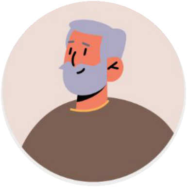
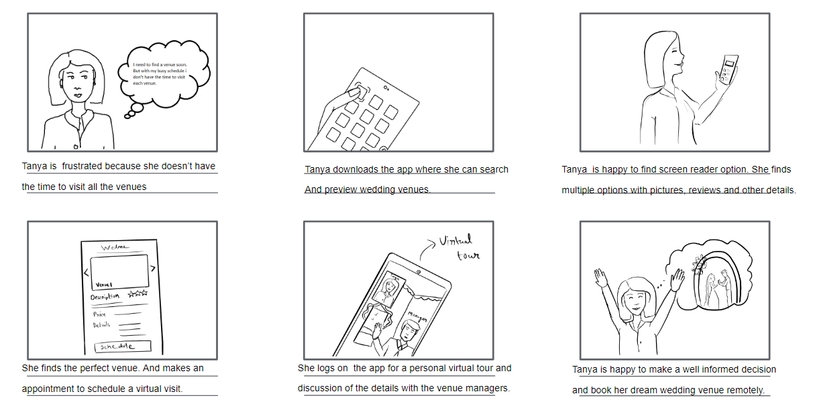
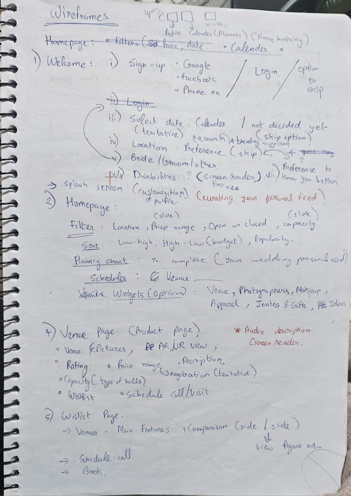
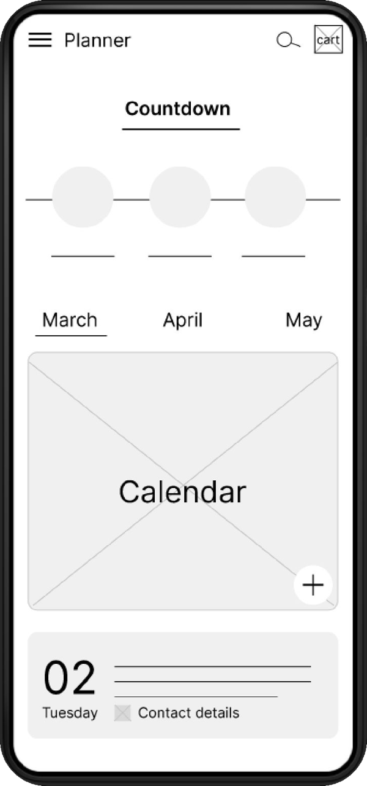
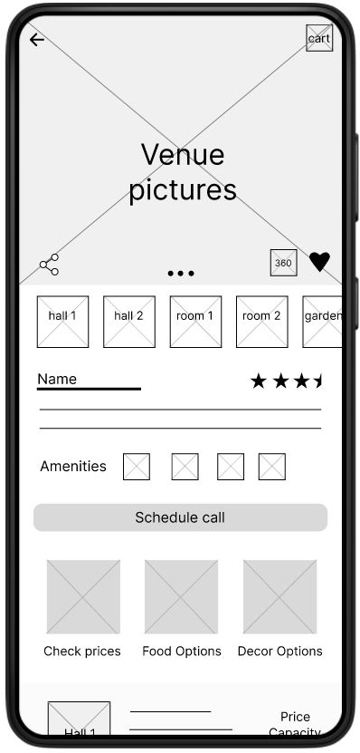
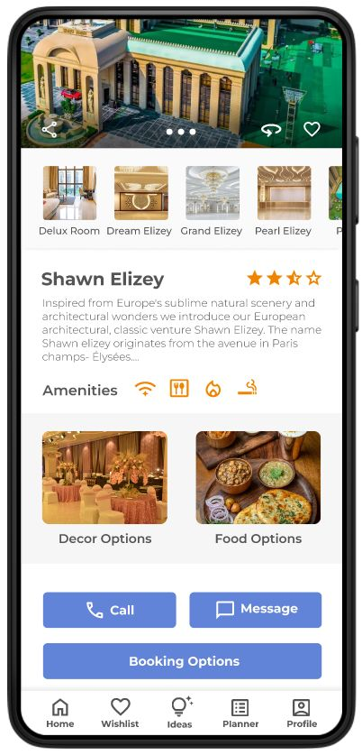
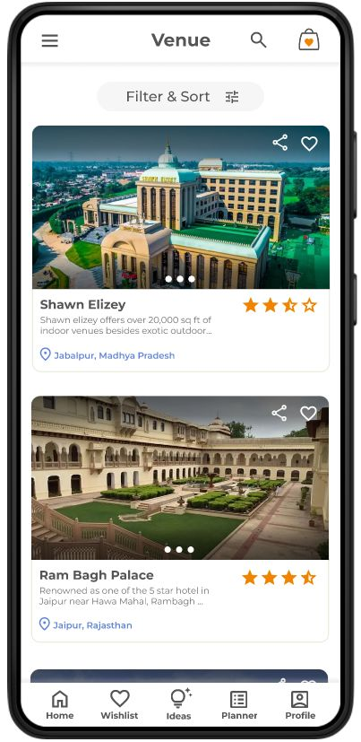
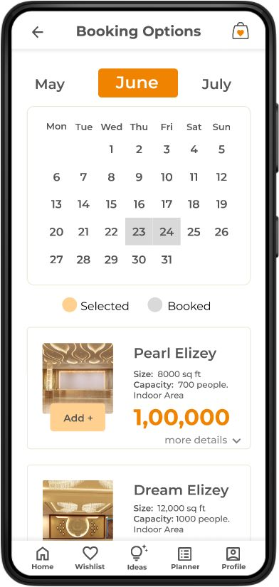

Context
Weddings in India are a $130 billion market, considered the country's fourth-largest industry, yet the sector is largely unorganised. Wedding planners exist, but they're expensive, so most families organise everything themselves.
The venue is the first big decision, and it still usually means visiting in person. The goal: let people easily view and book the venue they want, with virtual tours and full venue information at their fingertips.
Research
I started by interviewing 5 people in my network. I recruited people of different ages and different relationships to the bride or groom, so the findings would generalise better. I kept the questions open so participants could talk freely about organising past weddings, and focused on staying unbiased so I could spot the real pain points.

Price
Prices are unclear and change with demand.
Availability
It's hard to check whether a venue is free. Some are booked a year ahead, and several events at once spoil the experience.
Visualisation
It's hard to picture the venue on the day, and hard to communicate your own ideas.
Customisation
Venues offer fixed packages, so there's little room to customise.
Who it's for

Tanya, 30 · Software engineer in Germany
“I am a detail-oriented person; organising the wedding remotely has been a challenge.”
Tanya is engaged and planning to marry in Bhopal, where her family lives. She has a slight visual impairment and can't visit venues herself, and venues oversell and underdeliver. She needs a way to compare venues clearly by date and price, and to customise them.

Jai, 58 · Retired government official in Jaipur
“At this age I don't have the energy to go around searching for venues for my daughter's wedding.”
By tradition, Jai is arranging his elder daughter's wedding, but health issues stop him from visiting every venue. Prices keep changing and packages can't be customised. He needs a clear picture of availability and price, and a venue with facilities for traditional rituals.
Tanya's journey today
| Stage | Feeling | Opportunity |
|---|---|---|
| Search for venues online | Overwhelmed by options; unsure the information is genuine | Filter by needs and verify information |
| Contact venues for info | Irritated hunting for contact details; worried venues won't meet her needs | Contact details, prices, availability and facilities in one app |
| Set up a video call | Frustrated by the time difference and poor connections; scared it will look different in real life | A way to see the venue without a video call |
| Shortlist venues | Stressed because it's hard to compare | One place to compare |
| Book the venue | Relieved, and hopeful it goes to plan | Easier communication while planning |
Storyboards
Scenario: Tanya uses the app to find and book the wedding venue of her dreams, first in the big picture, then close up inside the app.


Competitive audit
I evaluated five wedding apps and websites popular in India: Resort Rio, GKS Conventions, Weddingz, WedMeGood and 1plus1studio.
Apart from Weddingz, none gave accurate price estimates based on the services you choose.
Structure
I mapped the information architecture, then listed the features each page needed, keeping accessibility in mind throughout.
- OnboardingWelcome
- →Sign up / LoginGoogle, Facebook or phone
- →QuestionsDate, location, role, accessibility needs
- →HomeA personalised feed
- From homeVenuesPhotos, AR/VR view, rating, price, capacity
- WishlistSide-by-side comparison
- PlannerCountdown and calendar
- Profile
- BookingAdd to cart
- →Booking information
- →Payment
Accessibility was part of the feature list from the start: a screen reader option and font size in onboarding, and audio descriptions on the venue page.


Key decisions
1. Replace the site visit with a tour and a call
- Decision
- A photo carousel for every hall, room and garden, a 360° virtual tour, and a button to schedule a live call with the venue.
- Why
- Looks, price and amenities decide a booking, and neither persona can visit. The journey map showed video calls were frustrating across time zones, so the tour works without one.
2. One planner for every appointment
- Decision
- A planner page with a wedding planning roadmap, a countdown, and a calendar that holds bookings alongside your own schedule.
- Why
- Wedding planning means many appointments happening at once, and keeping track of them is overwhelming.


3. Message the venue, not just call it
- Decision
- A messaging option next to calling on the venue page.
- Why
- Usability testing (round 2) showed some users aren't comfortable phoning a venue and would rather send their questions as text.
4. Profiles for everyone planning
- Decision
- Users create a profile in their account instead of only choosing “Bride” or “Groom”.
- Why
- Round 2 testing: parents, siblings and friends plan weddings too, as Jai does.
5. Book by calendar, compare by hall
- Decision
- Calendar-based booking, a burger menu and action bar for navigation, and a dedicated view to compare price changes for each hall in a venue.
- Why
- Round 1 testing. It also answers the two biggest pain points, availability and unclear prices.
Final design
The aim was to make navigation as easy as possible. Here's the venue page before and after usability testing, now with messaging next to the call button:






View the hi-fi prototype (opens in a new tab) · Lo-fi prototype (opens in a new tab)
Visuals
I wanted the visuals to be inspirational rather than commanding, supporting the content instead of competing with it. The mood board focused on simplicity and normcore aesthetics: mostly black and white, with subtle touches of accent colour.
- Orange
#F08400 - Peach
#FFD090 - Blue
#6184D8 - Charcoal
#444444
Orange holds deep cultural significance in India and is associated with happiness. Blue stands for loyalty and trust. In the logo, the “o” in the middle represents a wedding ring.
Reflection
Three things limited this project, and each shapes how I work now:
- Lack of peer review or feedback. Working solo, nobody challenged my decisions between testing rounds. Now I ask for critique early and often.
- Limited technical knowledge. Without knowing how features like 360° tours are built, it was hard to judge what was feasible. Now I bring in developers sooner.
- Unconscious biases. I recruited participants from my own network, so the findings may reflect people like me. A wider, more diverse sample would make them stronger.
Next steps
- Build out the remaining features: discover wedding planners, photographers and other vendors.
- Integrate AI: an AI-powered AR view of the decor, so users can see how different elements will look in their venue.
- Customisation: let people personalise the venue, including the customs different religions follow at weddings.